# N'oubliez pas de charger les paquets tidyverse et
# ggthemes ! Exécutez le code suivant pour le faire :
library(tidyverse)
library(ggthemes)5 Visualiser des données avec ggplot2
La session 5 a pour but d’approfondir les techniques de visualisation de données avec le paquet ggplot2, notamment la création des types de graphique suivants :
- Les nuages de points (angl. scatter plots)
- Les diagrammes à barres (angl. bar plots)
- Les histogrammes (angl. histograms)
- Les boîtes à moustaches (angl. box plots)
5.1 Les nuages de points (angl. scatter plots)
Commençons par le nuage de points, que nous avons déjà vu lors de la dernière session, lorsque nous avons visualisé la relation entre les carats et les prix dans le jeu de données diamonds.
NoteÀ noter
Un nuage de points (aussi appelé diagramme de dispersion) est utilisé dans ggplot2 pour représenter les valeurs de deux variables numériques différentes par des points, avec une variable sur l’axe des X et l’autre sur l’axe des Y.
Ce type de graphique est idéal pour l’analyse exploratoire de données, permettant d’observer les relations entre les variables, de détecter des tendances, des regroupements, des valeurs extrêmes (angl. outliers) ou de vérifier des hypothèses de corrélation.
Dans la fonction ggplot(), un scatter plot est créé avec la couche géométrique geom_point().
Créons un nuage de points avec le jeu de données iris, en comparant les longueurs et les largeurs des sépales des iris (les variables Sepal.Length et Sepal.Width).
Notez que, dans le code suivant, nous ne créons pas directement un graphique ggplot mais nous stockons le graphique comme un objet dans l’environnement, nommé p1, que nous pouvons ensuite afficher avec la fonction print(). Nous verrons dans un instant pourquoi cette pratique est utile.
# nuage de points basique pour comparer la longueur et la
# largeur des sépales des iris
np1 <- ggplot(data = iris, mapping = aes(x = Sepal.Length, y = Sepal.Width)) +
geom_point() + labs(title = "Sepal length and width in the iris dataset")
print(np1)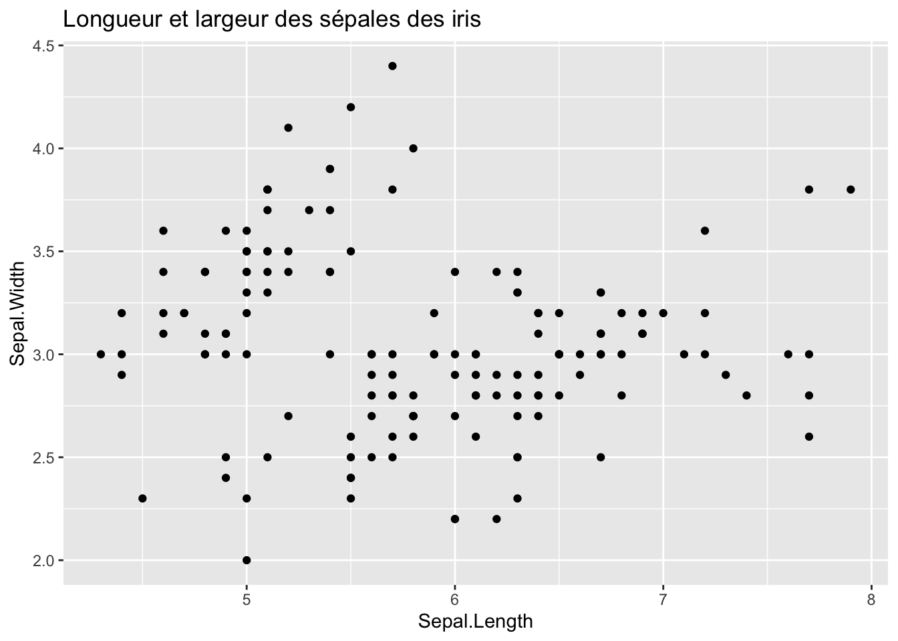
Nous pouvons ajouter des couches à l’objet np1 sans l’écraser, p. ex. une ligne de régression linéaire avec geom_smooth(method = lm) :
np1 + geom_smooth(method = lm)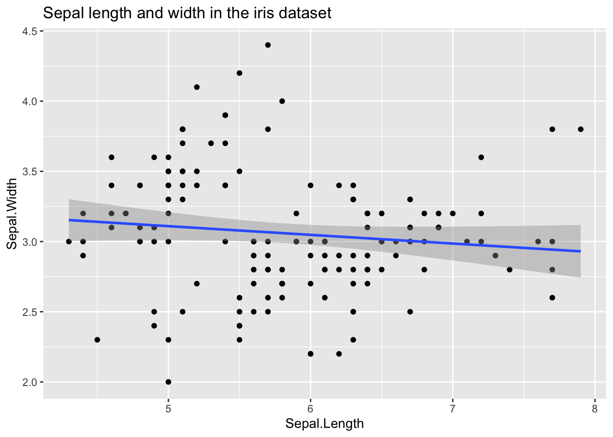
Que nous indique la ligne de régression ? En principe, elle indique une correlation légèrement négative entre les variables Sepal.Lengthet Sepal.Width ! (la zone grise autour de la ligne bleue est l’intervalle de confiance à 95 % de la droite de régression).
Cela signifie que les iris dont les sépales sont plus longs ont tendance à avoir des sépales un peu moins larges ! Gardez cette constatation à l’esprit pour les étapes de codage suivantes.
# Ecrasons np1 en changeant un peu le code. Découvrez
# vous-même ce qui a changé dans le code !
np1 <- ggplot(iris, aes(x = Sepal.Length, y = Sepal.Width, color = Species)) +
geom_point() + labs(title = "Sepal length and width in the iris dataset")
print(np1)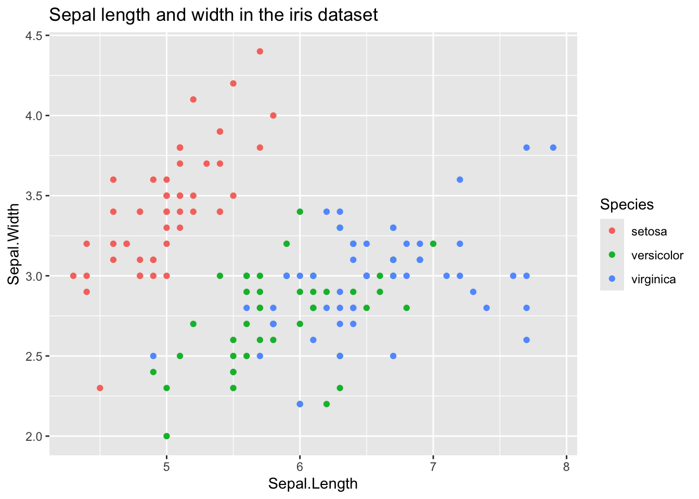
Vous pouvez voir dans le graphique que nous pouvons maintenant différencier les trois espèces d’iris. La dispersion des points semble moins aléatoire, ce qui permet de voir des groupes de points appartenant à l’une ou l’autre espèce (angl. cluster).
Maintenant, ajoutons à nouveau une couche geom_smooth() à l’objet np1 !
np1 + geom_smooth(method = lm)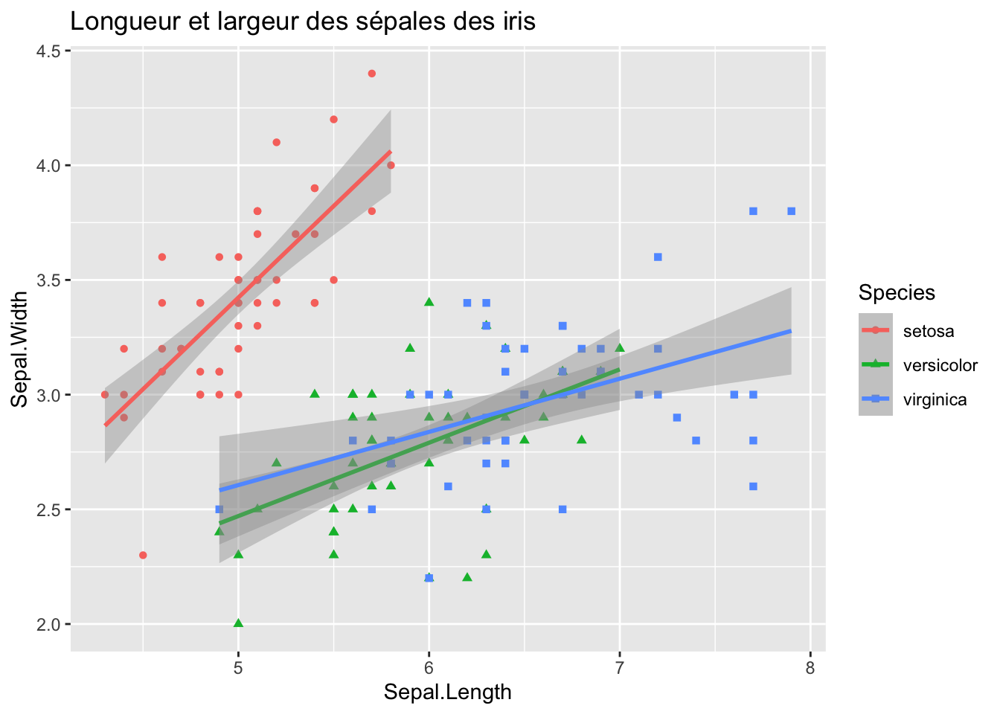
Les trois lignes de régression (une pour chaque type d’iris) montrent maintenant un tout autre résultat : en effet, la corrélation entre Sepal.Length et Sepal.Width est clairement positive.
Ce renversement s’appelle le paradoxe de Simpson : une tendance globale peut s’inverser lorsqu’on tient compte d’une variable de groupe (ici l’espèce).
Cette constatation est un exemple d’analyse exploratoire des données, rendue possible par les possibilités de visualisation de ggplot2.
5.2 Les diagrammes à barres
NoteÀ noter
Les diagrammes à barres dans R avec ggplot2 sont utilisés pour représenter visuellement des données catégorielles, permettant de comparer des quantités entre différentes catégories.
On les utilise donc souvent pour montrer la fréquence ou la proportion d’observations dans chaque catégorie, ce qui les rend utiles pour analyser des tendances ou des différences au sein de données catégorielles.
Dans la fonction ggplot(), un diagramme à barres est créé avec la couche géométrique geom_bar().
Par exemple, nous pouvons utiliser le code simple suivant pour comparer la fréquence des différentes tailles (angl. cut) dans le jeu de données diamonds. Cette-fois ci, nous sauvegardons et nommons le graphique db1.
db1 <- ggplot(data = diamonds, mapping = aes(x = cut)) + geom_bar()
print(db1)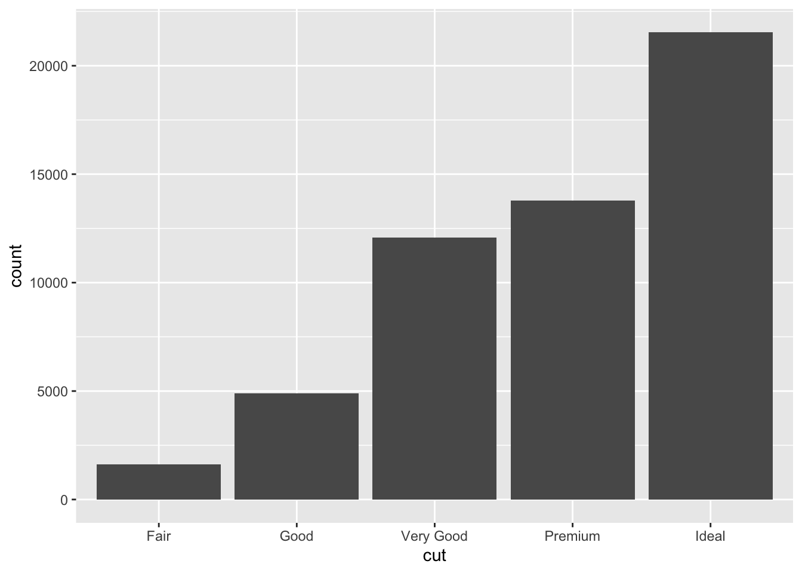
Améliorons le graphique avec des paramètres et des couches supplémentaires de la fonction ggplot() (Notez que nous allons simplement écraser l’objet db1 créé précédemment avec une nouvelle version de db1 !) :
library(ggthemes)
db1 <- ggplot(data = diamonds, mapping = aes(x = cut, fill = cut)) +
geom_bar() + labs(title = "Frequency of cut quality types in the diamonds dataset",
subtitle = "n = 53,940 diamonds", x = "Cut Quality", y = "Count") +
theme_minimal()
print(db1)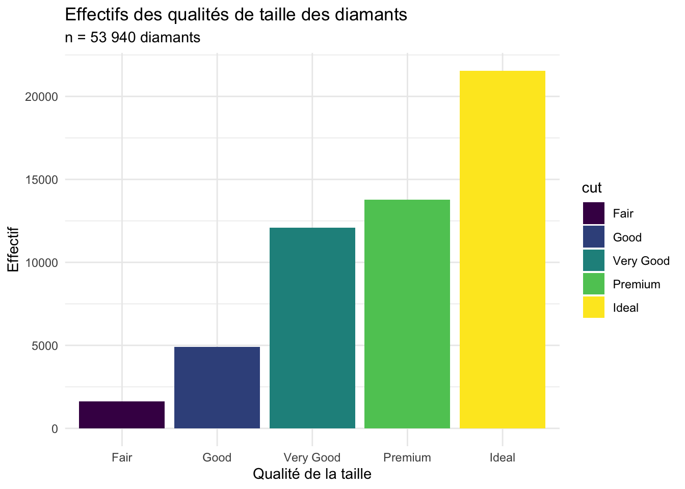
Que nous dit le graphique ? Il est intéressant de constater que dans le jeu de données diamonds, le niveau de qualité le plus élevé de la taille, à savoir ideal, est également le plus fréquent.
Mise en gardeAttention
Dans la fonction ggplot(), il y a une différence si vous voulez ajouter de la couleur aux points (qui ont mathématiquement zéro dimension) ou aux surfaces (qui ont deux dimensions), comme dans les diagrammes à barres.
Si vous voulez ajouter de la couleur à une surface, vous devez utiliser l’argument fill = "xyz". L’argument color = "xyz" que nous avons utilisé pour ajouter de la couleur aux nuages de points ne fera qu’ajouter de la couleur à la ligne autour de la surface !
C’est maintenant à vous de jouer !
Reprenez le code que nous avons utilisé pour créer db1 et modifiez-le pour créer un nouvel objet,db2, qui visualise la fréquence des types de qualité de couleur (color) dans le jeu de données diamonds sous la forme d’un diagramme à barres !
5.3 Les histogrammes
NoteÀ noter
Un histogramme est un type de graphique utilisé pour représenter la distribution d’une variable numérique à travers des barres.
Un “histogramme sépare les valeurs possibles des données en classes ou groupes. Pour chaque groupe, on construit un rectangle dont la base correspond aux valeurs de ce groupe et la hauteur correspond au nombre d’observations dans le groupe.
L’histogramme a une apparence semblable au graphique à barres verticales, mais il n’y a pas d’écart entre les barres.
En règle générale, l’histogramme possède des barres d’une largeur égale” (Source : Statistique Canada, 2021).
L’histogramme est particulièrement utile pour :
- Analyser la distribution : Comprendre si les données sont normalement distribuées, asymétriques (angl. skewness), ou si elles ont des queues plus ou moins épaisses que la loi normale (kurtosis).
- Détecter les valeurs extrêmes : Identifier les données qui s’écartent du reste de l’ensemble des données de manière signifiante.
- Comparer des distributions : Observer comment différentes sous-populations se comparent les unes aux autres en termes de distribution de données.
Avec ggplot2 en R, créer un histogramme se fait avec la couche géométrique geom_histogram(). Par défaut, geom_histogram() découpe les données en 30 intervalles (angl. bins) et affiche un message invitant à choisir une meilleure valeur. On peut fixer la largeur des intervalles avec l’argument binwidth (p. ex. geom_histogram(binwidth = 30)) ou leur nombre avec bins.
Avant de créer un histogramme avec le code R, introduisons d’abord une nouvelle fonction : rnorm(). Elle peut être utilisée pour créer des valeurs aléatoires qui suivent une loi normale (angl. normal distribution).
Les arguments que nous pouvons entrer dans la fonction sont :
le nombre
nde valeurs aléatoires que nous voulons créerla moyenne
meande la distribution des valeurs aléatoiresl’écart-type
sdde la distribution des valeurs aléatoires
Notez que par défaut, la fonction utilise mean = 0 et sd = 1, ce qui correspond à une loi normale centrée réduite (angl. standard normal distribution).
Utilisez aussi ?rnorm()pour accéder à plus d’infos.
AstuceAstuce
La fonction set.seed() dans R est utilisée pour définir la graine (seed en anglais) du générateur de nombres aléatoires. La graine est un nombre entier qui sert de point de départ pour le générateur de nombres aléatoires.
En définissant une graine spécifique, par exemple avec set.seed(123), vous garantissez que la séquence de nombres aléatoires générée par la suite avec des fonctions telles que rnorm(), sera la même à chaque fois que vous exécuterez le code, ce qui est utile pour la reproductibilité des résultats.
Dans le code R suivant, nous utilisons rnorm() pour simuler les distributions des tailles des hommes et des femmes en Suisse.
D’après l’Enquête suisse sur la santé 2017 (Staub et al., 2022), les femmes mesurent en moyenne 164,6 cm (écart-type 6,5 cm) et les hommes 177,0 cm (écart-type 7,1 cm). Dans la suite, nous utilisons des valeurs proches : une moyenne de 164.7 cm pour les femmes et de 177.4 cm pour les hommes, avec des écarts-types un peu plus petits de 5.6 cm et de 6.1 cm.
# Simulation de tailles de femmes en Suisse Créer 500
# valeurs aléatoires de taille (moyenne = 164.7 et
# écart-type = 5.6) avec la fonction rnorm().
set.seed(123)
taille_f <- rnorm(500, mean = 164.7, sd = 5.6)
head(taille_f)[1] 161.5613 163.4110 173.4288 165.0948 165.4240 174.3044# stocker taille_f comme objet de type 'data.frame'
taille_f <- as.data.frame(taille_f)
# visualiser taille_f avec un histogramme basique
ggplot(data = taille_f, mapping = aes(x = taille_f)) + geom_histogram()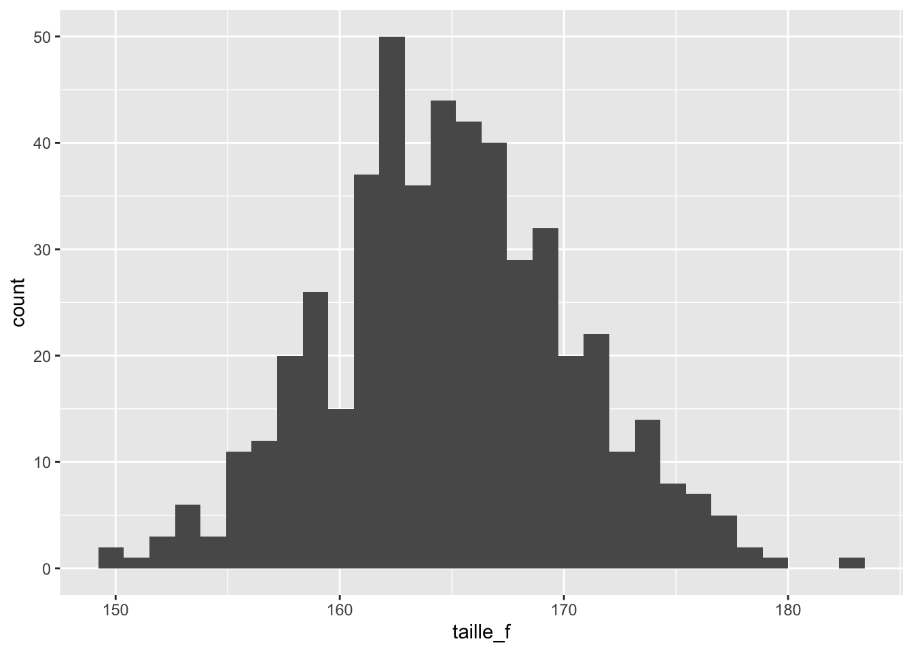
# jouer avec le paramètre 'binwidth' de l'histogramme qui
# définit l'intervalle de la base de ses barres
ggplot(data = taille_f, mapping = aes(x = taille_f)) + geom_histogram(binwidth = 10)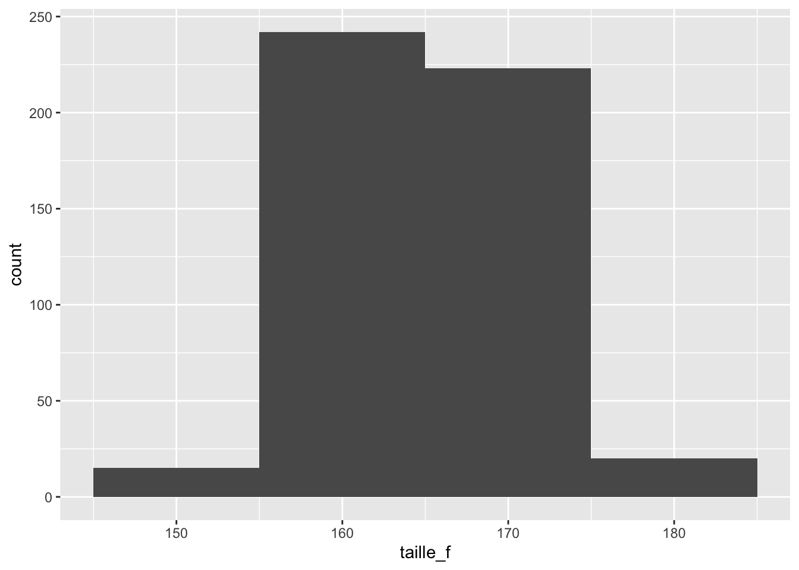
ggplot(data = taille_f, mapping = aes(x = taille_f)) + geom_histogram(binwidth = 0.1)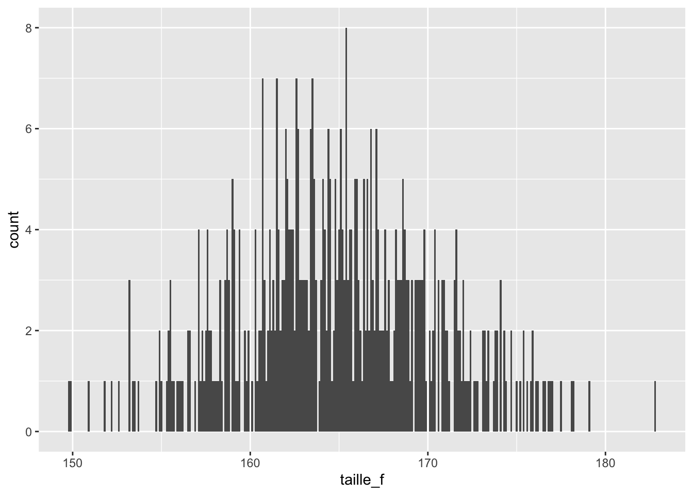
ggplot(data = taille_f, mapping = aes(x = taille_f)) + geom_histogram(binwidth = 1)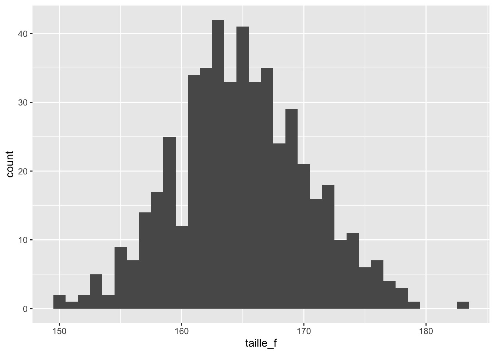
# stocker l'histogramme comme objet, nommé hist1, et
# modifier sa couleur
hist1 <- ggplot(data = taille_f, mapping = aes(x = taille_f)) +
geom_histogram(binwidth = 1, color = "black", fill = "white")
print(hist1)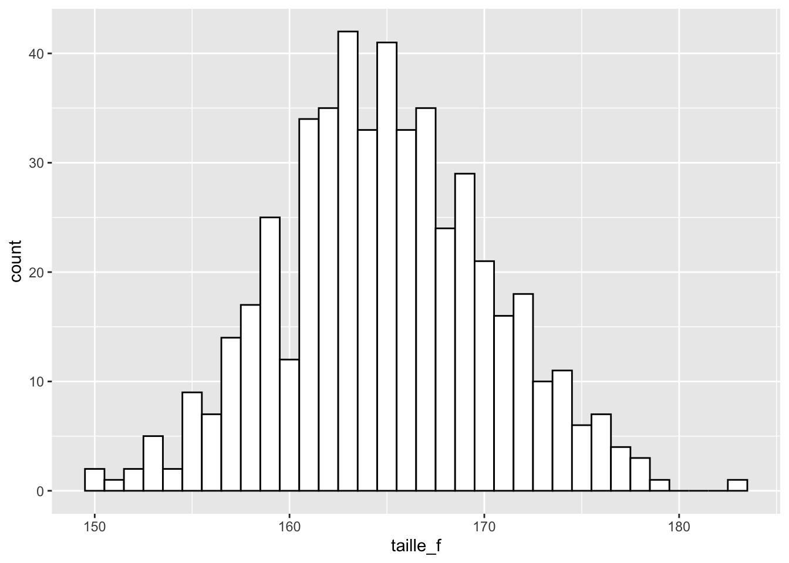
# Ajouter des couches supplémentaires pour améliorer la
# visualisation p. ex. des titres
hist1 <- hist1 + labs(title = "Histogramme des tailles de femmes en Suisse",
subtitle = "Simulation basée sur 500 observations", x = "Taille en cm",
y = "Fréquence") + theme_bw()
print(hist1)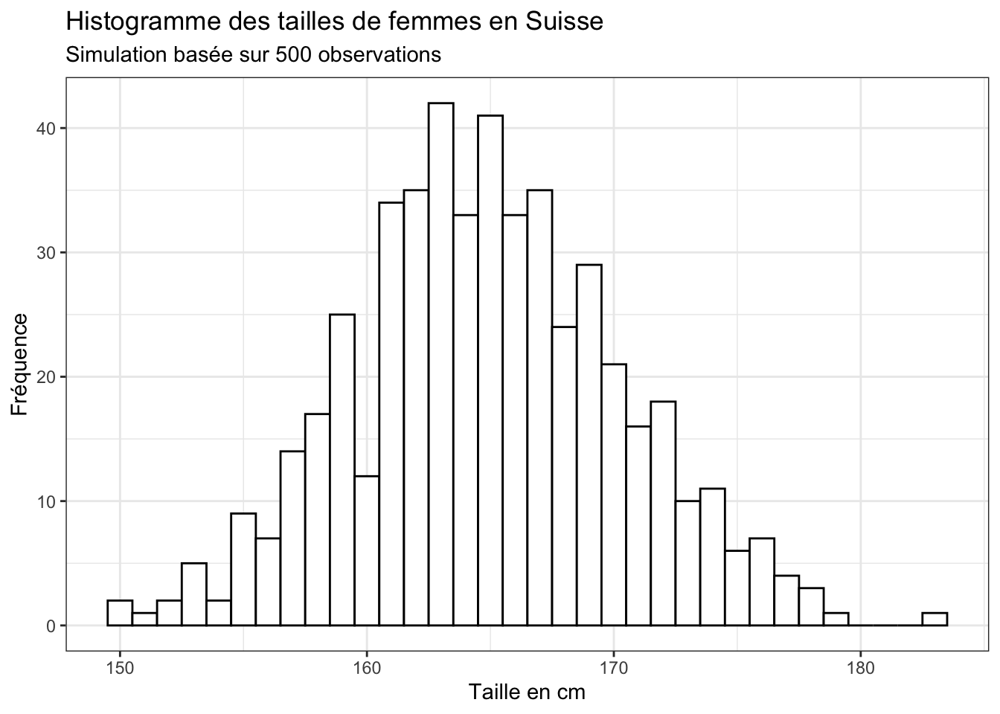
AstuceAstuce
Un élément clé des visualisations de données est la couleur. Le document PDF suivant, créé par Ying Wei de l’Université de Columbia à New York, montre et liste les noms des couleurs dans R. Vous pouvez copier-coller le nom d’une couleur et l’utiliser dans votre graphique ggplot2 !
C’est maintenant à vous de jouer !
Reprenez le code que nous avons utilisé pour créer taille_f et hist1 et modifiez-le pour créer une nouvelle simulation de taille d’hommes, taille_h, et un nouvel histogramme qui montre sa distribution, hist2. Jouez avec les paramètres binwidthet la couleur de votre visualisation. Pour cette tâche, vous pouvez supposer que les hommes en Suisse ont une taille moyenne (mean) de 177,4 cm avec un écart-type (sd) de 6,1 cm.
5.4 Les boîtes à moustaches (angl. boxplots)
NoteÀ noter
Les boîtes à moustaches, ou boxplots, sont un type de graphique pour représenter la distribution d’un ensemble de données à travers cinq mesures clés :
- l’extrémité de la moustache inférieure
- le premier quartile (Q1 ; début de la boîte)
- la médiane (Q2 ; ligne qui “coupe la boîte en deux”)
- le troisième quartile (Q3 ; fin de la boîte) et
- l’extrémité de la moustache supérieure.
Les moustaches s’étendent jusqu’aux valeurs les plus extrêmes situées à moins de 1,5 × l’écart interquartile de la boîte ; les valeurs au-delà sont dessinées comme des points (valeurs extrêmes potentielles). Les moustaches correspondent donc au minimum et au maximum seulement s’il n’y a pas de valeurs extrêmes.
Ces diagrammes permettent d’identifier rapidement la médiane, l’étendue interquartile (angl. interquartile range = IQR) et les valeurs extrêmes potentielles. Ils sont particulièrement utiles pour comparer les distributions entre plusieurs groupes ou variables.
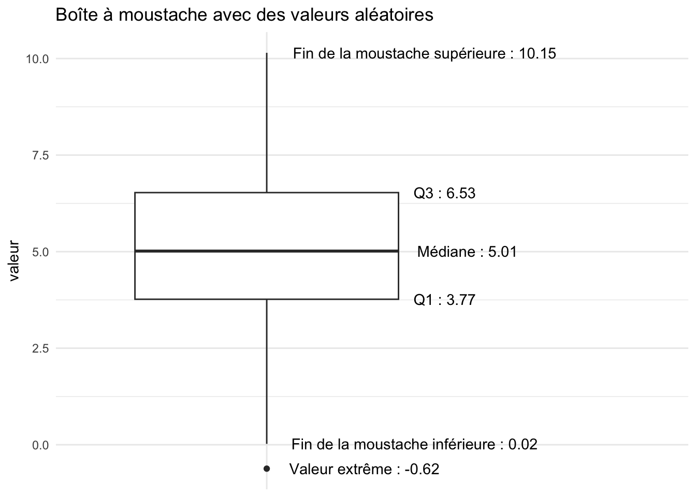
Le dataset mtcars en R, qui contient des données sur les caractéristiques de différents modèles de voitures, peut être utilisé pour illustrer l’utilisation de boxplots.
Par exemple, pour visualiser la distribution de l’efficacité énergétique (mpg, miles par gallon) des voitures en fonction du nombre de cylindres (cyl), on peut utiliser le code suivant :
# Avant de créer le boxplot, vérifions d'abord la structure
# de mtcars :
str(mtcars)'data.frame': 32 obs. of 11 variables:
$ mpg : num 21 21 22.8 21.4 18.7 18.1 14.3 24.4 22.8 19.2 ...
$ cyl : num 6 6 4 6 8 6 8 4 4 6 ...
$ disp: num 160 160 108 258 360 ...
$ hp : num 110 110 93 110 175 105 245 62 95 123 ...
$ drat: num 3.9 3.9 3.85 3.08 3.15 2.76 3.21 3.69 3.92 3.92 ...
$ wt : num 2.62 2.88 2.32 3.21 3.44 ...
$ qsec: num 16.5 17 18.6 19.4 17 ...
$ vs : num 0 0 1 1 0 1 0 1 1 1 ...
$ am : num 1 1 1 0 0 0 0 0 0 0 ...
$ gear: num 4 4 4 3 3 3 3 4 4 4 ...
$ carb: num 4 4 1 1 2 1 4 2 2 4 ...Nous pouvons constater que la colonne cyl (cylindre) est stockée au format numérique.
C’est un problème, car nous voulons comparer l’efficacité énergétique (mpg) des voitures à 4, 6 ou 8 cylindres. Nous devons traiter chacune d’entre elles comme un sous-groupe distinct. Comment faire ?
# Transformons donc cyl en facteur
mtcars$cyl <- as.factor(mtcars$cyl)
# Et maintenant nous pouvons construire notre boxplot
box1 <- ggplot(data = mtcars, aes(x = cyl, y = mpg, fill = cyl)) +
geom_boxplot(alpha = 0.2) + labs(title = "Miles par gallon (mpg) selon le nombre de cylindres dans mtcars",
x = "Nombre de cylindres", y = "Miles per gallon (mpg)")
print(box1)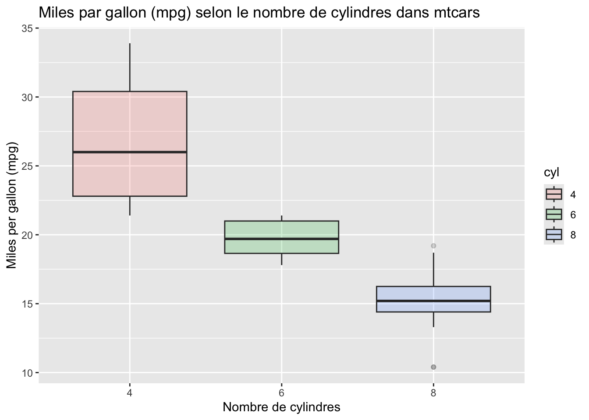
Ce code génère un boxplot, box1, pour chaque groupe de cylindres dans le dataset mtcars, permettant de comparer facilement l’efficacité énergétique (mpg) entre les voitures avec des nombres de cylindres différents.
NoteÀ noter
Le paramètre alpha = 0.2 à l’intérieur de geom_boxplot() rend les boxplots transparents. En général, alpha peut être compris entre 0 (totalement transparent) et 1 (non transparent). C’est un paramètre supplémentaire qui permet de personnaliser votre graphique ggplot2.
On voit dans le graphique des boxplots que dans mtcars, les voitures avec des moteurs ayant plus de cylindres ont aussi tendance à être moins efficaces en termes de consommation de carburant. Il existe toutefois quelques intersections entre les groupes. C’est-à-dire qu’il y a des voitures à 8 cylindres qui sont relativement efficaces en termes de consommation de carburant, surpassant quelques voitures à 6 cylindres, par exemple.
À faire avant de continuer
- Refaites les graphiques de ce chapitre et modifiez leurs paramètres (couleurs,
binwidth, titres) pour voir ce qui change. - Révisez les chapitres 4 et 5, puis testez-vous avec le chapitre « Révision 2 ».
Exercices
Choisissez Vrai ou Faux, cochez une réponse ou tapez un nombre : la couleur indique tout de suite si votre réponse est correcte. Cliquez sur Explication pour voir la correction.
Question 5.1
Jugez chaque proposition concernant l’histogramme suivant des points obtenus au Problem Set 1 :
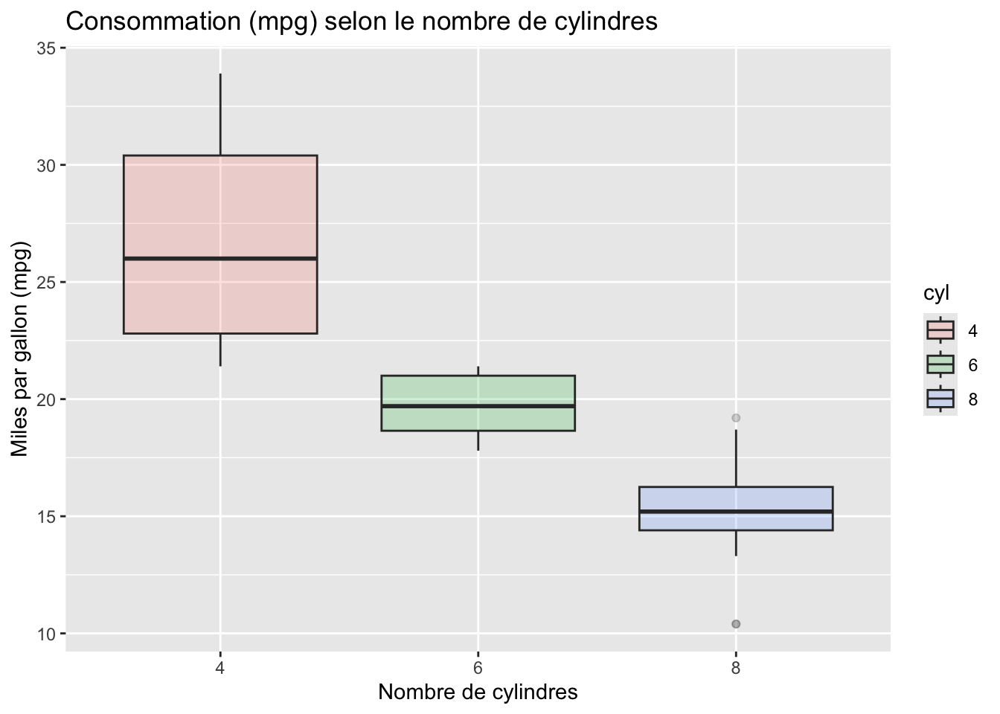
Les étudiant·es ont obtenu le plus fréquemment 13 points dans le Problem Set 1.
Le graphique montre qu’en médiane, 16 points ont été obtenus dans le Problem Set 1.
Le graphique montre qu’en moyenne, 16 points ont été obtenus dans le Problem Set 1.
L’histogramme montre que la distribution des points dans le Problem Set 1 suit une loi normale centrée réduite.
a) La barre la plus haute est à 14 points (le mode).
b) et c) Un histogramme ne montre ni la médiane ni la moyenne exactes. Ici, la médiane vaut 14 et la moyenne 14,2.
d) Une loi normale centrée réduite a une moyenne de 0 et un écart-type de 1 : ce n’est pas le cas de points compris entre 8 et 20.
Question 5.2
Comment peut-on ajuster la largeur des intervalles dans un histogramme créé avec ggplot2 ?
En utilisant l’argument
bins.En ajustant l’argument
width.En modifiant l’argument
binwidth.En changeant l’argument
interval.
binwidth fixe directement la largeur de chaque barre ; bins fixe le nombre de barres, ce qui change aussi leur largeur. geom_histogram() n’a pas d’argument interval.
Question 5.3
Jugez chaque proposition concernant le graphique suivant, créé avec le jeu de données mpg (inclus dans le paquet ggplot2) :

La ligne de régression indique que la corrélation entre la taille du moteur et l’efficacité du carburant est négative.
Les données présentées proviennent du jeu de données
mtcars.Le jeu de données
mpgcontient des données relatives à l’économie de carburant de 1999 à 2008 pour 38 modèles de voitures populaires.L’axe des x de ce graphique indique les miles par gallon (
mpg).Le graphique montre que les moteurs de plus grande taille ont tendance à être associés à un plus grand nombre de miles par gallon.
a) et e) La droite descend : plus la cylindrée (displ) est grande, moins on parcourt de miles par gallon (hwy).
b) Les données viennent de mpg, pas de mtcars.
c) C’est la description de ?mpg.
d) L’axe des x montre la cylindrée (displ, en litres) ; les miles par gallon sont sur l’axe des y.
Question 5.4
Exécutez le code R suivant et jugez chaque proposition :
library(ggplot2)
data(mtcars)
g <- ggplot(mtcars, aes(mpg, wt)) + geom_point()
print(g)gest un objet stocké dans le volet Environment de RStudio.Le graphique
gaffiche une relation entre le poids des voitures (wt) et leur efficacité énergétique (mpg, miles par gallon).Le code produit un histogramme.
Chaque point dans le graphique représente une voiture du jeu de données
mtcars.Le graphique indique que les deux variables affichées sont négativement corrélées.
a) L’affectation <- stocke le graphique dans l’objet g.
c) geom_point() produit un nuage de points, pas un histogramme.
d) Chaque ligne de mtcars (une voiture) donne un point.
e) Les voitures lourdes parcourent moins de miles par gallon : cor(mtcars$mpg, mtcars$wt) vaut −0,87.
Question 5.5
Exécutez le code R suivant et jugez chaque proposition :
library(ggplot2)
data(mtcars)
# Transformations :
mtcars$cyl <- as.factor(mtcars$cyl)
mtcars$gear <- as.factor(mtcars$gear)
# Diagramme à barres :
ggplot(mtcars, aes(x = cyl, fill = gear)) +
geom_bar() +
labs(title = "Distribution of cylinders and gears in mtcars")Ce code produit un diagramme à barres représentant le nombre de voitures par nombre de cylindres.
La couleur des barres est déterminée par le nombre de vitesses (
gear).Les cylindres et les vitesses sont transformés en variables de type facteur.
Le graphique montre qu’il n’y a pas de voitures avec 8 cylindres et 4 vitesses dans
mtcars.Les voitures à 6 cylindres sont moins fréquentes que celles à 4 ou 8 cylindres.
a) geom_bar() compte les voitures par valeur de cyl.
b) fill = gear colore les barres selon le nombre de vitesses.
c) as.factor() transforme cyl et gear en facteurs.
d) La barre des 8 cylindres ne contient que des voitures à 3 et 5 vitesses.
e) Il y a 7 voitures à 6 cylindres, contre 11 à 4 cylindres et 14 à 8 cylindres.
Question 5.6
Exécutez le code R suivant et jugez chaque proposition :
rnorm(1000)Ce code génère 1000 valeurs « aléatoires » qui se rapprochent d’une loi normale centrée réduite (standard normal distribution).
Ce code génère un message d’erreur, car il y a des arguments manquants dans la fonction
rnorm().Ce code génère 1000 valeurs « aléatoires » qui se rapprochent d’une loi normale avec une moyenne = 1 et un écart-type = 0.
Ce code génère des valeurs numériques positives et négatives.
Toutes les lois normales ont le même écart-type.
Sans autres arguments, rnorm() utilise mean = 0 et sd = 1 : c’est la loi normale centrée réduite, qui produit des valeurs positives et négatives autour de 0.
e) L’écart-type est un paramètre de la loi : il varie d’une loi normale à l’autre.
Question 5.7
Quels types de visualisation sont bien adaptés pour afficher la relation entre deux variables numériques ?
Histogramme
Diagramme à barres
Boîte à moustaches
Nuage de points
Le nuage de points place une variable numérique sur chaque axe. L’histogramme montre la distribution d’une variable numérique ; le diagramme à barres compte des catégories ; la boîte à moustaches compare une variable numérique entre catégories.
Question 5.8
Une visualisation des données peut servir à l’analyse exploratoire des données.
Les graphiques sont un outil central de l’analyse exploratoire : ils révèlent la forme des distributions, les tendances et les valeurs aberrantes.
Question 5.9
Un boxplot peut être utilisé pour visualiser la distribution, la moyenne, les déciles et les valeurs extrêmes d’un ensemble de données.
Un boxplot montre la médiane et les quartiles (plus les moustaches et les valeurs extrêmes), pas la moyenne ni les déciles.
Question 5.10
Le code suivant crée un histogramme qui indique une loi normale :
library(ggplot2)
ggplot(data = diamonds, aes(x = price)) +
geom_histogram(binwidth = 600, fill = "steelblue", color = "black") +
labs(title = "Histogramme des prix dans le jeu de données diamonds",
subtitle = "n = 53 940 observations",
x = "Prix en USD", y = "Fréquence") +
theme_minimal()La distribution des prix est fortement asymétrique à droite : beaucoup de diamants bon marché, peu de diamants très chers. La moyenne (3933 USD) dépasse d’ailleurs nettement la médiane (2401 USD).
Question 5.11
La couche geom_smooth(method = lm) peut être utilisée pour ajouter une ligne de régression à un nuage de points dans ggplot2.
geom_smooth(method = "lm") ajoute la droite de régression linéaire (et son intervalle de confiance) au nuage de points.
Question 5.12
Le graphique suivant montre une simulation d’un million de tailles aléatoires d’hommes en Suisse, réalisée avec la fonction rnorm(). Il illustre le fait que plus le nombre de simulations est élevé, plus une loi normale est approchée avec précision.
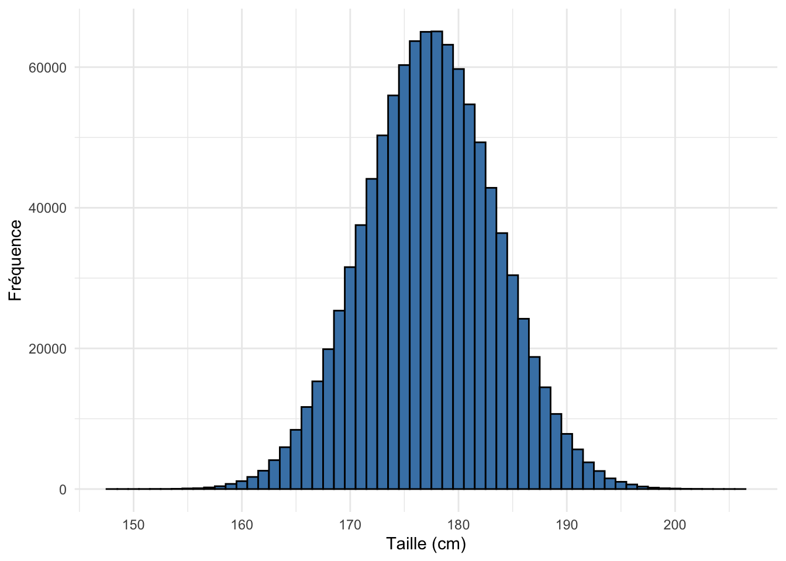
Avec un million de valeurs, l’histogramme prend presque parfaitement la forme en cloche de la loi normale. Avec seulement quelques dizaines de valeurs, il serait beaucoup plus irrégulier.